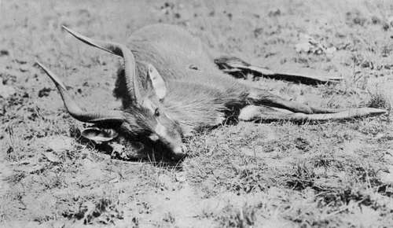

Chapter VIII - I.— Field Notes On The Game. Part 8
Description
This section is from the book "Wild Life In Central Africa", by Denis D. Lyell. Also available from Amazon: Wild Life in Central Africa.
Chapter VIII - I.— Field Notes On The Game. Part 8
Several men have shot situtunga, and Mr. T. A. Barns shot a number in the swamps of Lake Bangweolo. Mr. C. H. Timmler got several on the borders of Lake Young, and I have heard of several being shot near Lake Moir. Most of the horns seen have been traded from the natives, who kill great numbers in the rainy season by spearing them from canoes, after they have been driven into the water.
The females are hornless and much smaller than the males. I think there is always a greater difference between the weights of males and females when the latter are hornless than there is when the females grow horns.
Inyala (Tragelaphus Angasi)
Native Name
Chiyao.....Boo (pronounced " bow," long).
Approximate weight, | ♂ | 2251b. |
Good average horns, | ♂ | 26in. curve. |
Often written " Nyala," as the "N" is pronounced " in." This animal is, without exception, the most beautiful medium-sized antelope in Africa, as he is most gracefully formed and prettily marked; but it will take much trouble to shoot a male, as they are most difficult to find, even in country where they exist in moderate numbers. The inyala used to be plentiful in parts of South-East Africa, and that well-known hunter and field naturalist, Mr. F. C. Selous, shot several fine specimens near the Usutu River, within a reasonable distance of Delagoa Bay.
In Nyasaland they are known to occur sparingly on the Shire River, and are slightly more numerous near the Muanza River, flowing into the former.
Twice I have tried to find them, but on both occasions something came in the way, and I never saw a wild inyala, although I have still hopes of doing so.
My friend, Mr. C. H. Timmler, told me that he once shot two buck considerably larger than bushbuck, when they had come to drink on the Luangwa River, in North-Eastern Rhodesia. He fired across the river, and they both fell; but, as darkness was near, he had to leave them, and next morning he found that they had been removed by crocodiles. He firmly believes that they were inyala, and I see no reason to doubt that they do exist in parts of the Luangwa River, as I have heard of two other cases of antelopes being shot there like inyalas ; but the successful sportsmen were not experienced hunters or field-naturalists, or they would certainly have kept the heads and skins for identification.
Parts of the Luangwa valley certainly look typical inyala country, as there are large tracts of thick papyrus and reeds bordering the river. On the Muanza River, however, the inyala, I believe, inhabit thick scrub near it, and do not live solely in the dense reeds.
I examined carefully a very fine specimen of a full-grown, though not aged, male which is in the Durban Museum. The hair is long under the neck and belly, and reaches some way down the legs, the prevailing colour of the animal is a silver grey, and the sides of the body are striped with white, with a few white spots on the haunches. The legs of this specimen were a rich rufous colour below the knees ; but I believe the oldest males lose this colour in time.
The females are hornless and differ in colour from the males. In a book written by the late Captain Faulkner, about 1868, entitled "Elephant Haunts," he mentions shooting an antelope, near Cape Maclear, on Lake Nyasa, which from his description was probably an inyala.
Situtunga - Photo by J. E. Hughes.
I have never heard that inyala exist there, but it is possible that they do, or they may have existed and been exterminated ; although this is doubtful, as the natives are not possessed of guns, and they would be unlikely to exterminate any species by hunting with dogs and spears, or even with nets, in the type of country these antelopes inhabit.
I believe that when the valley of the Luangwa River becomes better known, that the existence there of the inyala will be proved as a fact ; and it is possible that it also inhabits other little-known country in Central Africa.
Puku (Cobus Vardoni)
Native Names
Chinyanja - Seuli.
Chingoni - Seuli.
Approximate weight, | ♂ | 1701b. |
Good average horns, | ♂ | 16½in. front curve. |
Scarce in Nyasaland, and very localised, although they exist in great numbers in the Luangwa valley, and on the banks of most of its tributaries. In Nyasaland it is only found on the Bua River, and the heads there are not nearly so good as those of North-Eastern Rhodesia, where they sometimes grow to over 2oin.
The puku also exists south of the Zambesi in suitable localities. It is never found far from water, and I have often seen them lying on the sandbanks of the Luangwa River in the dry season. It is of a yellowish colour, with white belly, and in shape well formed. The meat is tough eating, and the animal is very tenacious of life, like the waterbuck, unless well hit, when it is as easily killed as any antelope.
The males fight a good deal. I have noticed them doing so on several occasions, and I once picked the point of another ram's horn out of the neck of one I shot. Sometimes when a ram is shot it will attack another, thinking it was the cause of the injury. Puku rams often collect in herds comprising males only, and in a herd of females there will generally be only one old ram.
The females are hornless and their flesh is better eating than that of the males. The Chibisa name for the puku is seula.
Lechwe (Two Varieties)
The Red (Cobus lichi).
The Black (Cobus smithemani).
Native Names
Chibisa - Nja.
Chiwemba - Nja.
Approximate weight, | ♂ | 180lb. |
Good average horns, | ♂ | 27in. front curve. |
The common or red lechvve is found south of the Zambesi in much the same type of country as is inhabited by the puku. The species is not found in Nyasaland, but in North-Eastern Rhodesia it is very abundant in the country bordering Lake Bangweolo where both varieties are present. The black variety is a most handsome antelope with rich rufous black colouring on the sides, the top of the back being a rich black and the belly white. Considering their size, lechwe grow fine trophies of a lyre shape, and well ringed.
Continue to:
- prev: Chapter VIII - I.— Field Notes On The Game. Part 7
- Table of Contents
- next: Chapter VIII - I.— Field Notes On The Game. Part 9